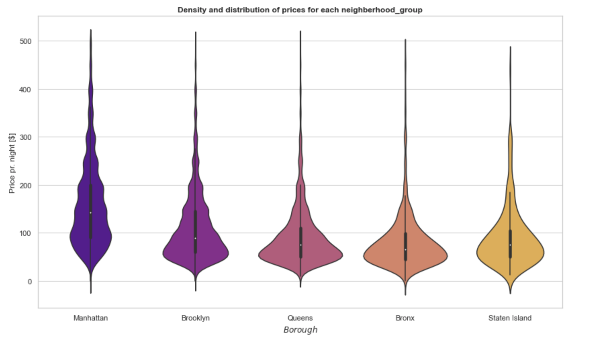
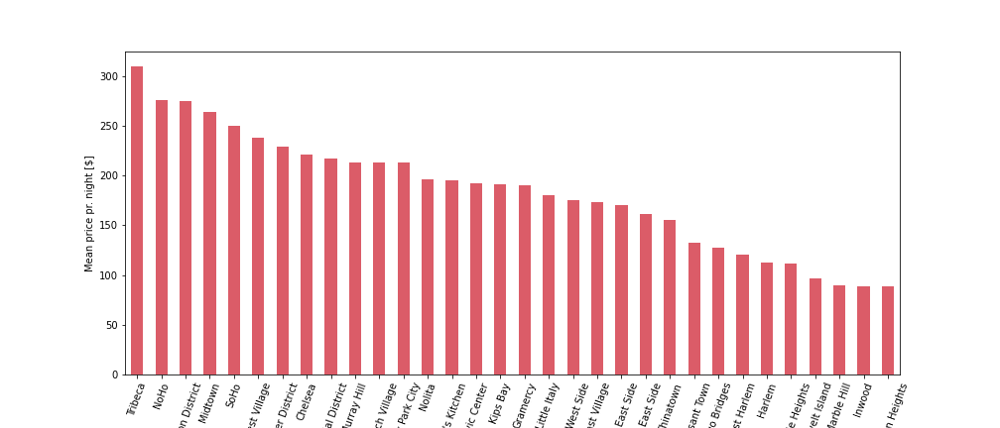

AirBnB in New York City
By Julie Olin, Julian Skovhus & Mik Lokdam
AirBnB is an online platform that accommodate guests with short-term lodging options that is mainly provided by private hosts. AirBnB is mainly used by travellers when looking for homestay rentals for a vacation and was founded by Brian Chesky in August 2008. Since the incorporation, AirBnB has experienced an exponential growth and now accounts for upwards of 20% of the vacation rental industry as a whole.
In New York City (NYC), more than 48.000 listings were available for rent in 2019. Listings range from a whole penthouse apartment with panorama view overlooking Central Park to a shared bedroom in Brooklyn and with the vast variety in accommodation options, NYC is set to fullfill the need of any traveller. As a tourist, it may be overwhelming to choose a place to stay in NYC as NYC is a very diverse city with 5 boroughs. Also, each borough contains serveral districts, each with their own charm and caracteristics. Should travellers choose to stay in the posh Manhattan, the hip Bronx or the cultural Brooklyn? And which characteristics defines each of these borough?
We help answer this. Let us start out with some basic stats to outline some differences between the 5 boroughs. The listings are distributed as follow:
| Borough | Residents | AirBnB listings |
|---|---|---|
| Manhattan | 1.593.200 (19%) | 21.661 (44,3%) |
| Brooklyn | 2.511.408 (31%) | 20.104 (41,1%) |
| Queens | 2.256.576 (28%) | 5.666 (11,6%) |
| Bronx | 1.364.566 (17%) | 1091 (2,2%) |
| Statens Island | 475.014 (6%) | 373 (0,8%) |
One thing to notice is Manhattan and Brooklyn. Although Manhattan and Brooklyn make up 50% of the total population in NYC, they make up more than 85% of the total AirBnB listings. This indicate that these boroughs are attractive to tourists. Not surprisingly, because who wouldn’t stay near the iconic Brooklyn Bridge or Times Square, dubbed ‘the center of the world’?
Looking at price differences visualised below, it is clear that Manhattan is also the most expensive borough, while Brooklyn follows approx. the same price pattern as the other boroughs.

The majority of tourists associate with NYC with Manhattan, making the two almost synonymous. Manhattan also houses the most tourist attractions in NYC - Times Square, Central Park, Empire State Building, Wall Street, Statue of Liberty just to mention a few. Since Manhattan has the most AirBnB listings and a myriad of tourist attraction, it’s a hotspot for tourism.
Let’s take a deeper look into Manhattan.
Manhattan also houses many neighbourhoods. Below is a map of Manhattan and where the 32 neighbourhoods are located.
Ranging from Battery Park City in the very South to Marble Hill in the North, each neighbourhood has different characteristics regarding the price and availability of AirBnBs.
The map below show the average rent price for AirBnBs in a given neighbourhood and by moving the mouse cursor over one the neighbourhood, more information such as the name of the neighbourhood and number of AirBnBs per square kilometre.
Neighbourhoods in the northern parts of Manhattan has lower average rent prices for AirBnBs, whereas neighbourhoods south of Central park has the most expensive AirBnBs. The histogram below show how Tribeca is significantly most expensive neighbourhood to rent an AirBnB in.
Mean prices 
Tribeca became an exclusive living area due to a substitution of industrial companies with artistic civilians during the 1960-70s. Today, Tribeca is known for it’s many celebrities who recides in the neighbourhood and enjoy luxury living in relatively quieter sorroundings.